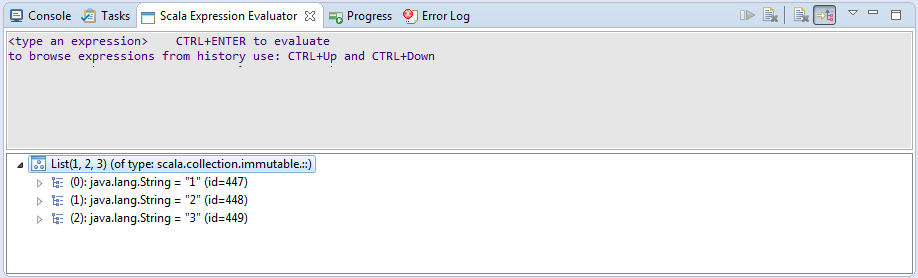

Expression evaluator user documentation
Scala debugger uses new expression evaluator, which translates user code into invocations of JDI remote calls. This
allows evaluation of expression in context of some breakpoint, with access to local variables and methods.
Expression evaluator adds separate view to Scala IDE (similar to Scala interpreter view). It also enables conditional breakpoints - breakpoints that are enabled only if some condition is met.
Evaluator view
To open evaluator view use Window → Show View → Other → Debug → Scala Expression Evaluator. In there, any
expression can be evaluated in context of your current breakpoint. This allows usage any values and types visible
from breakpoint and (possibly) modification of state of your application.
CTRL+ENTER evaluates expression. CTRL+Up and CTRL+Down browses expression history. Code completion can be
triggered with CTRL+Space (enabled in properties).
Tree view part contains structure of result which can be traversed to inspect it further (see also
Logical structures support).
Note
Evaluator view works only when using Scala debugger and on SUSPENDED threads.
It is also possible to immediately evaluate a selected text from the editor. One can do that using CTRL+SHIFT+K
shortcut or the dedicated button. If there’s no selected text, a whole line containing a cursor will be sent to the evaluator.
Configuring expression view
Expression view can be configured to your liking. There are 5 pre-configured views to choose from:
Console and tree on bottom

Input and tree on bottom
Preferences
In context menu Text clear after evaluation and line numbers can be enabled/disabled:
More settings can be configured in preferences view (Window → Preferences → Scala → Debug → Expression Evaluator):
Choosing frame on which to evaluate expression
Expressions can be evaluated on any (non-native) frame in current thread. Frames can be changed by simply clicking on
them in Debug view:
Refreshing variables view after evaluation
Variables view is refreshed after each evaluation to reflect (possible) changes in values shown. You can disable it in preferences.
Conditional breakpoints
Expressions can be assigned to breakpoint as a condition. Such breakpoint will only stop if expression evaluates to
true or if evaluation completes with error.
To convert standard breakpoint to conditional one enter Breakpoint properties either via context menu or
CTRL + Double click shortcut:
In settings, enable conditional and type in expression.
Note
Condition must return Boolean, otherwise an error will be issued.
Note
Currently only Suspend when 'true' is supported, Suspend when value changes is not.
Features and problems
Scala is a language with a lot of features and not every feature is supported in expression evaluator right now. The following should work fine:
- access to all values visible from breakpoint (both locally and globally) with exception of access modifiers (see known limitations),
- assignment to Scala
vars, - control structures:
if/else,while,do/whileandforcomprehensions, - both Java and Scala var-arg methods and Scala var-arg constructors,
- implicits,
- methods from
thisandsuper, - number, tuple, unit and
nullliterals, - creating new instances (those are created on debugged jvm),
- limited support for lambdas (you need to specify types of arguments sometimes),
- operations on
Arrays, - access to Java fields and methods (both static and instance),
- assignment to Java fields,
isInstanceOfandasInstanceOf,- named-parameters,
- and default values.
Expression evaluator depends on implementation details of Scala, JDI and JVM platform and not all Scala features are supported yet. Known limitations includes:
- assignment to local variables (those inside methods) of type boxed Java primitive (eg:
java.lang.Integer), try/catch,throw,scala.Dynamic,- Java constructors with var-args (
ToolBoxfails to compile those - see SI-9212), - relative imports (see SI-6393),
- access to
privateandprotectedmethods and fields, - float literals (for some reason
1.0fbecomes1.0after parsing withToolBox), - and probably more unknown to us.


{kind=link}
{kind=link}
{kind=link}
{kind=link}
{kind=link}
{kind=link}